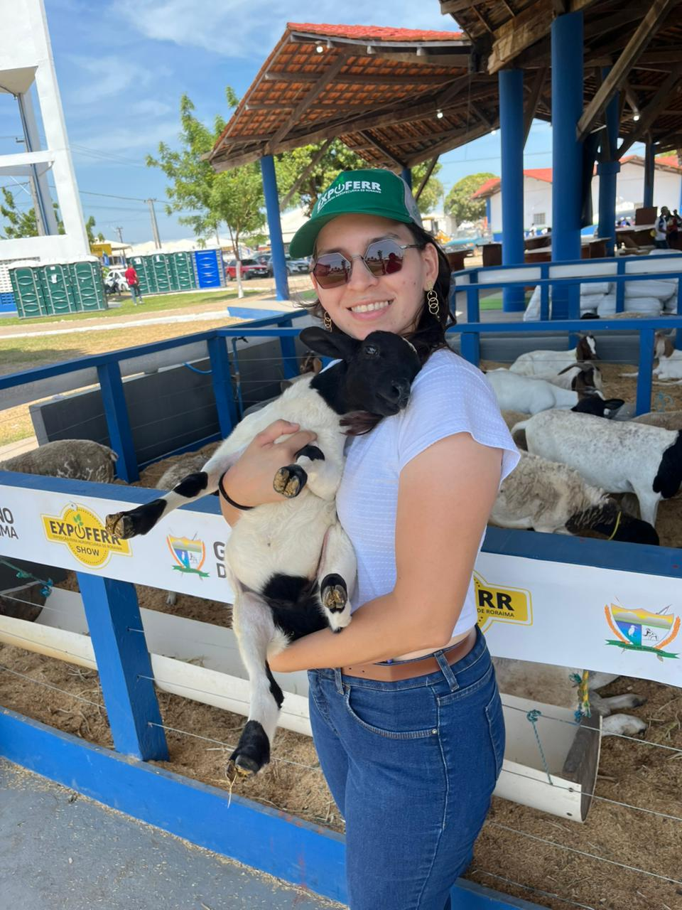
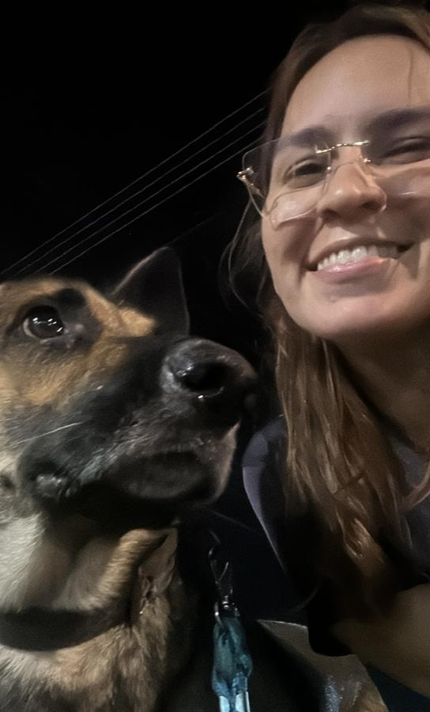
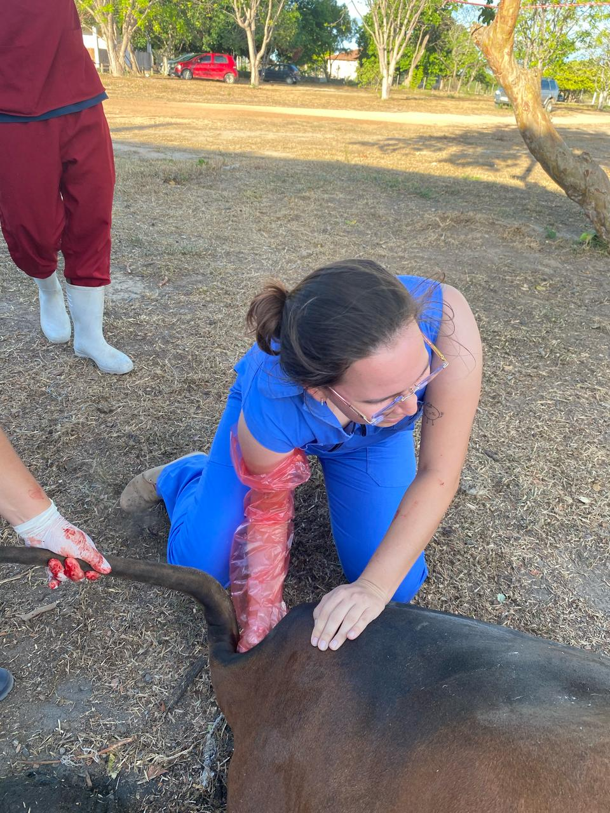

Juliana Koczinski
Médica Veterinária
Atendimento realizado no conforto da sua casa, reduzindo o estresse do animal e proporcionando mais praticidade ao tutor.
Aplicação segura de vacinas essenciais para a prevenção de doenças e manutenção da saúde do seu pet.
Cuidados temporários para o seu pet durante viagens ou ausências, incluindo alimentação, hidratação e companhia.


Monitoramento da recuperação após procedimentos cirúrgicos, com orientações para uma recuperação tranquila e segura.
Check-up preventivo para identificar possíveis problemas de saúde e promover mais qualidade de vida ao pet.
Recomendações alimentares personalizadas para atender às necessidades do seu pet em cada fase da vida.
Avaliação clínica completa para acompanhamento da saúde do seu pet, prevenção de doenças e orientações de cuidados.
Auxílio na aplicação de medicamentos e tratamentos prescritos, garantindo segurança e bem-estar ao animal.
